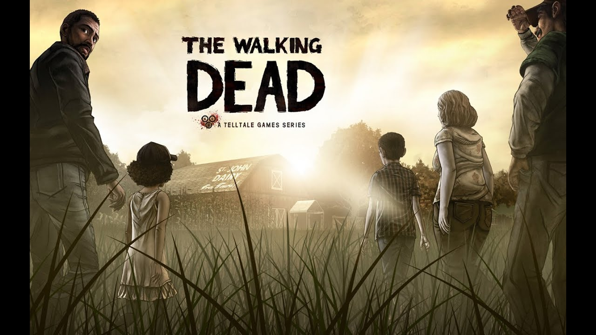
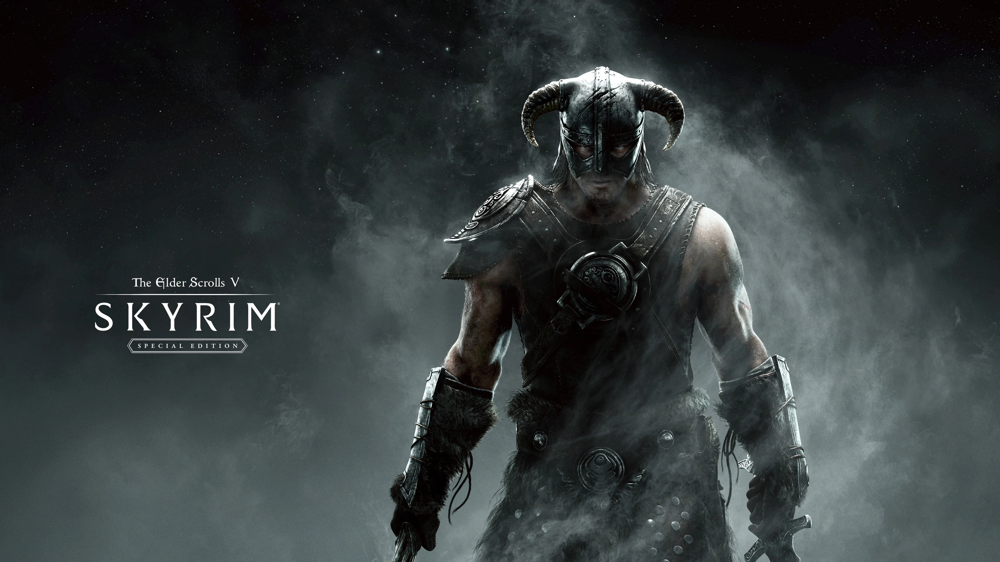

2022 - Elden Ring

Es un RPG de acción y aventura desarrollado por From Software y distribuido por Bandai Namco Entertainment. El argumento ha sido escrito junto a George R. R. Martin (escritor de Juego de Tronos), se basa en un héroe que emprende una aventura para obtener ventaja en una guerra con un artefacto.
2021 - It takes two
It Takes Two es un juego de plataformas creado para jugar en cooperativo. Supera todo tipo de desafíos con un amigo y toma el control de Cody y May, dos personajes que tienen habilidades únicas. Conforme superas las pruebas te metes de lleno en una emotiva historia que trata sobre cómo superar las dificultadas para llevarse bien.
2020 - The Last of Us Parte II

Cinco años después de su peligroso viajes a través de unos Estados Unidos postpandémicos, Ellie y Joel se han asentado en Jackson, Wyoming. Vivir en una próspera comunidad de supervivientes les ha otorgado paz y estabilidad a pesar de la amenaza constante que suponen los infectados y otros viajeros más desesperados. A raíz de unos violentos acontecimientos que truncan esa paz, Ellie se embarca en un viaje sin descanso para hacer justicia y conseguir pasar página. A medida que va dando caza, uno a uno, a los responsables, tendrá que enfrentarse a las devastadoras consecuencias físicas y emocionales de sus actos.
2019 - Sekiro: Shadows Die Twice

Sekiro: Shadows Die Twice es un título desarrollado por FromSoftware, el mismo estudio que en su día hizo Bloodborne y la franquicia Dark Souls. En el juego tomamos el control de Lobo Manco, un guerrero que ha caído en desgracia y que ha sido rescatado de la muerte. En su día prometimos proteger a un señor descendiente de un antiguo linaje y ahora somos el objetivo del clan Ashina. Un buen día, dicho señor es capturado y esto hace que tengamos que restituir nuestro honor. Todo el juego transcurre en Japón, durante la era Sengoku. Durante la aventura nos esperan enemigos muy poderosos que pondrán a prueba nuestras habilidades.
2018 - God of War

Es un videojuego de acción y aventura desarrollado por SCE Santa Monica Studio y distribuido por Sony Interactive Entertainment. Es la octava entrega de la serie y la secuela de God of War III. Esta vez la historia se basa principalmente en la cultura nórdica y no en la griega, ya que vemos varias referencias a Dioses del valhalla en vez de los del Olimpo. En la trama veremos a un Kratos más viejo que ha llevado una vida tranquila durante mucho tiempo, estará acompañado de su hijo, Atreus, y le enseñará cómo sobrevivir y defenderse, pero una vez más es arrastrado a los conflictos con los Dioses y se ve obligado a cuidar a su hijo.
2017 - The Legend of Zelda: Breath of the Wild

Es un RPG de acción y aventura desarrollado y distribuido por Nintendo. Es la decimoctava entrega de la serie y el primer juego de The Legend of Zelda para Nintendo Switch. La historia tiene la misma esencia que las anteriores entregas, pero cambian varios detalles significativos que van de la mano con las nuevas habilidades, gráficos y jugabilidad. Esta vez Link se despierta en un santuario sin haber recordado nada de lo que pasó, pero consigue una piedra llamada Sheikah que le permite abrir puertas y escapar del lugar hasta encontrarse con un anciano que le habla de su destino. A partir de aquí el objetivo principal del protagonista es eliminar al malvado Ganon el Cataclismo y salvar a la princesa Zelda.
2016 - Overwatch
Desarrollado por Blizzard, Overwatch es un shooter competitivo en primera persona donde hay un gran número de héroes, cada uno con sus propias habilidades únicas. A la hora de jugar podemos elegir la clase, hay tres disponibles: tanque, daño y apoyo. Las partidas son de 6 contra 6 y con un ritmo frenético. En cuando a modos de juego, hay variedad: práctica de combate, partidas o práctica contra la IA, partidas rápidas, arcade, partidas competitivas y partidas personalizadas.
2015 - The Witcher 3: Wild Hunt
The Witcher 3: Wild Hunt es la última entrega. Desarrollado por CD Projekt RED, es un RPG de mundo abierto realmente grande donde somos Geralt de Rivia. Tenemos que encontrar a la niña de la profecía mientras recorremos todo tipo de zonas peligrosas como pasos de montaña y cuevas olvidadas. Como en todo RPG hay que ir mejorando las armas y el resto de piezas del equipo, así como comprar pociones para afrontar los combates con garantías y no morir en el intento.
2014 - Dragon Age: Inquisition

Es un RPG de acción y aventura desarrollado por BioWare y distribuido por Electronic Arts. La trama transcurre una vez más en el continente de Thedas, lugar donde el protagonista deberá salvar al mundo evitando una guerra civil entre magos y templarios. En este caso, la historia es más abierta y no tan lineal como las anteriores entregas, y el mapa general es mucho más grande.
2013 - Grand Theft Auto V
GTA V (Grand Theft Auto V) es la quinta entrega numerada de la saga superventas de Rockstar Games. Se trata de una aventura de acción de mundo abierto con multitud de misiones en la que encarnamos a tres personajes distintos: Trevor, Michael y Franklin. GTA V se ambienta en Los Santos, ciudad ficticia basada en Los Angeles.
2012 - The Walking Dead
The Walking Dead: Season One es la primera temporada del videojuego desarrollado y publicado por Telltale Games, que se encuentra basado en la popular serie de cómics. El jugador se coloca en los zapatos de Lee Everet, héroe y protagonista de la historia, quien deberá tomar decisiones cruciales en su lucha por continuar con vida en un mundo plagado por muertos vivientes. La aventura se sitúa en el mismo universo que el cómic y sirve de cierta manera como precuela a la historia allí contada.
2011 - TES V: Skyrim
The Elder Scrolls V: Skyrim es un ARPG del tipo mundo abierto desarrollado por Bethesda Game Studios y publicado por Bethesda Softworks. Skyrim es la quinta entrega de la serie The Elder Scrolls de videojuegos de acción y fantasía. La historia de Skyrim se centra en los esfuerzos del personaje, Dovahkiin (sangre de dragón), para derrotar a Alduin, un dragón/dovah que, según la profecía, destruirá el mundo.
2010 - Red Dead Redemption
Red Dead Redemption es un videojuego no lineal de acción-aventura wéstern desarrollado por Rockstar San Diego. Se trata de la historia de un forajido que transcurre en los últimos años del lejano oeste estadounidense, en 1911, y narra la historia del antiguo bandido John Marston, que es chantajeado por los agentes federales que tienen amenazada a su familia para que ayude a imponer la ley en la frontera mexicano-estadounidense y capture a su antiguo compañero, y actual bandido, Bill Williamson.
2009 - Uncharted 2

Uncharted 2: El reino de los ladrones, titulado originalmente Uncharted 2: Among Thieves, es un videojuego de acción-aventura en tercera persona desarrollado por Naughty Dog. Nathan Drake está dentro de un tren destrozado, a punto de caer por un acantilado, en China. ¿Cómo ha llegado hasta allí? Cinco meses antes, junto a Harry Flynn y Chloe Frazer, planeó el robo de una lámpara en un museo de Estambul. Allí, escondido, estaba un mapa realizado por Marco Polo que señalaba la ruta hacia la mítica ciudad de Shambala. Tras ser traicionado por uno de ellos, Nathan se embarca en una aventura para encontrar la ciudad antes que sus enemigos.
2008 - Grand Theft Auto IV
Grand Theft Auto IV (abreviado como GTA IV o GTA 4) es un videojuego de acción-aventura de mundo abierto desarrollado por Rockstar North. La historia del juego discurre en Liberty City, una ciudad ficticia basada fuertemente en la ciudad moderna de Nueva York.1415 El protagonista de la trama es Niko Bellic, un veterano de guerra de Europa del Este,16 que emigró a Estados Unidos en busca del sueño americano prometido por su primo,17 pero que rápidamente es arrastrado a un submundo criminal.
2007 - Bioshock

BioShock es un videojuego de disparos en primera persona y terror, desarrollado por Irrational Games. El juego transcurre en una ucronía del año 1960, y pone al jugador en el rol de Jack, superviviente de un accidente de avión, que luego deberá explorar la ciudad de Rapture, mientras que lucha contra seres humanos mutados con poderes especiales y robots diseñados para atacar ciertos objetivos automáticamente.
2006 - TES IV: Oblivion
Juego desarrollado por Bethesda. La aventura empieza cuando, estando el jugador prisionero en la prisión de la Ciudad Imperial, tres guardias imperiales de la orden de los Cuchillas se acercan y entran a tu celda escoltando al emperador Uriel Septim. Necesitan huir ya que unos asesinos vienen a por el emperador, y resulta que en tu celda se encuentra una entrada a un pasadizo secreto para huir. Entonces el emperador se te acerca y dice que ve algo en ti y que cree que puedes ayudar, y te pide que vayas con ellos y protejas al emperador.
2005 - Resident Evil 5
Resident Evil 5 es un videojuego de acción-aventura y disparos en tercera persona de estilo terror y supervivencia desarrollado por Capcom. La historia del juego transcurre a principios de 2009, cinco años después de los eventos de Resident Evil 4; sigue a Chris Redfield, uno de los supervivientes del desastre de la mansión Spencer que se ha convertido en miembro y fundador de la B.S.A.A.; una fuerza especial dedicada a combatir el bioterrorismo en todo el mundo.
2004 - GTA San Andreas

Grand Theft Auto: San Andreas es un videojuego de acción-aventura de mundo abierto británico desarrollado por Rockstar North y publicado por Rockstar Games. La trama del juego ocurre en San Andreas, estado ficticio que contiene a tres ciudades metropolitanas: Los Santos, San Fierro y Las Venturas. La obra cuenta la historia de Carl Johnson “CJ”, que al llegar, intenta restablecer el poder de su antigua banda y su familia, mientras desvela poco a poco la verdad detrás de la muerte de su madre.